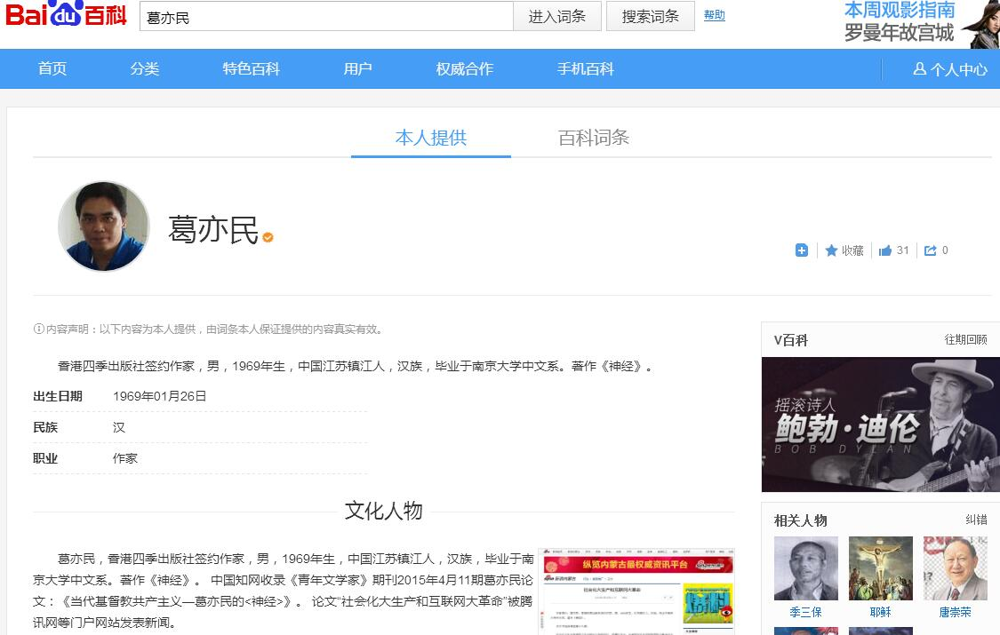

1、百度百科词条：葛亦民 
2、中文科技期刊数据库【维普网】收录葛亦民论文:当代基督教共产主义——葛亦民的《神经》
3、万方数据知识服务平台收录葛亦民论文:当代基督教共产主义——葛亦民的《神经》
4、社会化大生产和互联网大革命-新浪网
5、社会化大生产和互联网大革命-中国网
6、社会化大生产和互联网大革命-腾迅网
7、百度学术收录葛亦民论文:当代基督教共产主义——葛亦民的《神经》
8、掌桥科研收录葛亦民论文:当代基督教共产主义——葛亦民的《神经》
大话《神经》图片版